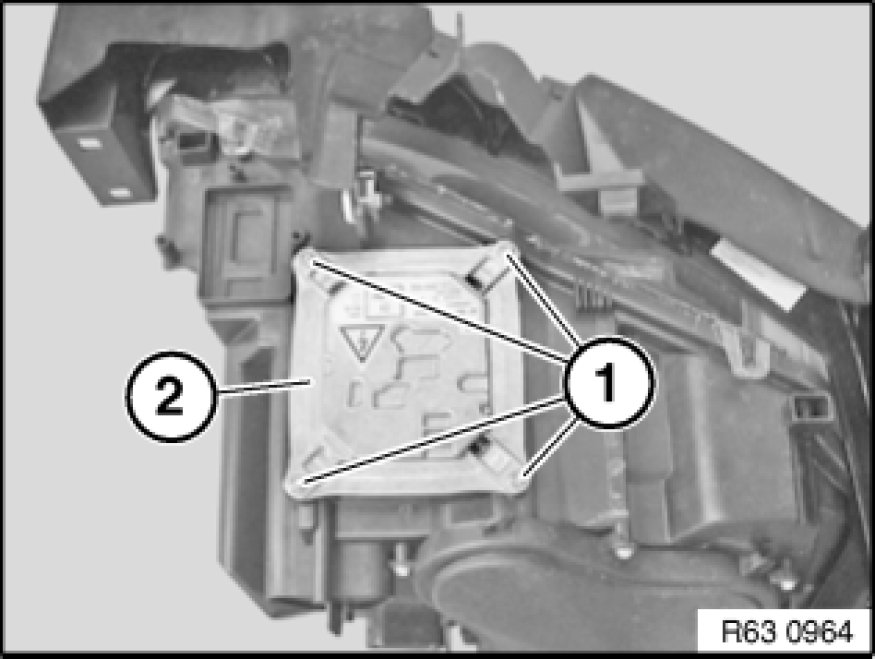
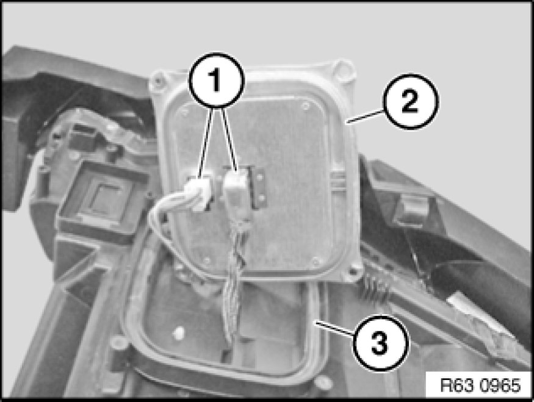

Replacing Control Unit for Left Xenon Headlight (From 09/06)
63 12 860 - Replacing control unit for left xenon headlight (from 09/06)

Warning!
Version with xenon headlights: Danger to life due to high voltage! Therefore, before removing, disconnect all components from the power supply (lighting system and ignition off).
Work on the entire xenon lighting system (control unit, ignition unit with bulb) may only be carried out by specialist personnel.

Important!
Read and comply with notes on protection against electrostatic damage (ESD protection) 61 35 ... Notes on ESD Protection (Electro Static Discharge).

Necessary preliminary tasks:
- Remove left headlight Removing and Installing/Replacing Left Headlight (Xenon Headlight)

Release screws (1). Tightening torque 63 12 10AZ [1][2]Headlamp.
Remove control unit for xenon headlight (2) from headlight.

Disconnect plug connection (1).
Remove control unit for xenon headlight (2).
Installation Note:
Make sure seal (3) is correctly seated on headlight.
Make sure wiring harnesses are correctly routed.